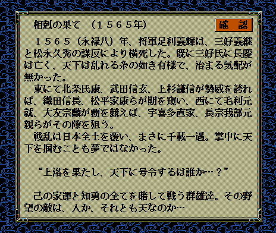

シナリオ説明文型＆ カスタム::On_シナリオ説明表示直前(int シナリオ番号) {
return NULL;
}

シナリオ説明文型＆ カスタム::On_シナリオ説明表示直前(int シナリオ番号) {
switch (シナリオ番号) {
case 1 :
{
break;
}
case 2 :
{
break;
}
case 3 :
{
シナリオ説明文型 sn = {
" １５６５（永禄八）年、将軍足利義輝は、三好義継\x0A"
"と松永久秀の謀反により横死した。既に三好氏に長慶\x0A"
"は亡く、天下は乱れる糸の如き有様で、治まる気配が\x0A"
"無かった。\x0A"
" 東にて北条氏康、武田信玄、上杉謙信が勢威を誇れ\x0A"
,
"ば、織田信長、松平家康らが期を窺い、西にて毛利元\x0A"
"就、大友宗麟が覇を競えば、宇喜多直家、長宗我部元\x0A"
"親らがその隙を狙う。\x0A"
" 戦乱は日本全土を覆い、まさに千載一遇。掌中に天\x0A"
"下を掴むことも夢ではなかった。\x0A"
,
"\x0A"
" “上洛を果たし、天下に号令するは誰か…？”\x0A"
"\x0A"
" 己の家運と知勇の全てを賭して戦う群雄達。その野\x0A"
"望の敵は、人か、それとも天なのか…\x0A"
};
return sn;
break;
}
case 4 :
{
break;
}
case 5 :
{
break;
}
case 6 :
{
break;
}
}
// 変更しない場合NULL
return NULL;
}